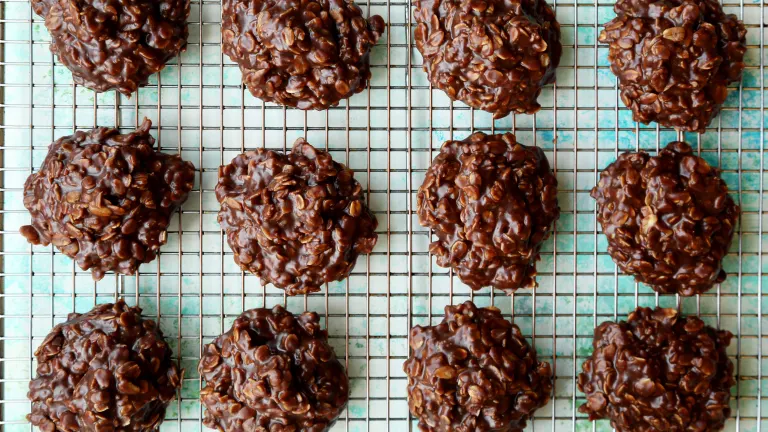

Chocolate Oatmeal Cookies

Description
Chocolate oatmeal cookies are a timeless favorite that are sure to put a smile on everyone's face. These treats are also easy to put toghether and can be ready to eat in a few minutes. The ingredients are simple and require no baking.
These cookies are totally delicious. They have the perfect blend of chocolate and peanut butter. The cookies will absolutely melt in your mouth.
Ingredients
- 2 cups of sugar
- 4 Tbsp cocoa powder
- 1 stick room temperature butter
- 3/4 cup creamy peanut butter
- 1 tsp vanilla extract
- 2 1/2 cups quick oatmeal
- 1/2 cup milk
Steps
- Combine sugar, butter, milk and cocoa in a saucepan
- Bring saucepan to medium heat
- Bring ingredients to a boil and stir continuously for three minutes
- Turn off heat but leave the pot on the stove
- Add the peanut butter and vanilla extract
- Stir in the oats
- Spoon the mixture onto wax paper forming cookies
- Allow cookies to cool